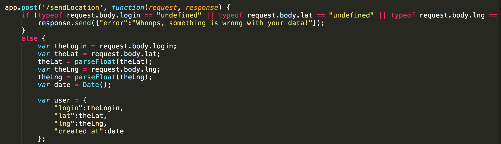
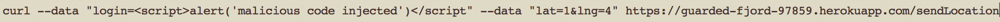

Security and Privacy Assessment of Client-Side and Server-Side
Introduction
This is a security assessment document for both the client-side and server-side of a Historic Landmark
web application. It will address, document and provide ideas for the resolution of these issues. The
application under review is a webpage that retrieves the current location of the user, sends it to a
database and then displays the locations of the people in the comp20 class along with all historic
landmarks within a one-mile radius on a map.
Methodology
In order to identify potential security issues in the program, I first observed client-side of the
application, without knowing what the source code looks like. After this, I thoroughly inspected
the source code for both the client-side and server-side. After observing the POST and GET requests
to the server as well as their inputs, I fiddled with them using a series of request to the server
using curl.
Abstract of Findings
Issues Found
Issue #1: Cross Site Scripting @/sendLocation
- Location: Page that displays past checkins. Code: index.js at the /sendLocation POST request (line 19).
- Severity: VERY HIGH. Affects all users viewing https://guarded-fjord-97859.herokuapp.com/ and can lead to malicious code being run on the victim's browser.
- Description: The mainpage for the guarded-fjord app displays all past checkins(lat, lng and time) as per the specifications of assignment #4. This information is therefore echoed to all users visiting the site. I inspected the code that handles user input for later insertion to the mongo database:

As seen above, the checkin variables are taken directly from user input without any input validation(other than if they are not undefined), and are later added to the database and displayed on the webpage. Let's see what happens when a simple script is added as user input instead of an actual username. I ran the following post request using curl:

Now let's see the results when you visit the checkin page with your browser:
Conclusion
TO DO MY GUY
References
TO DO MY GUY